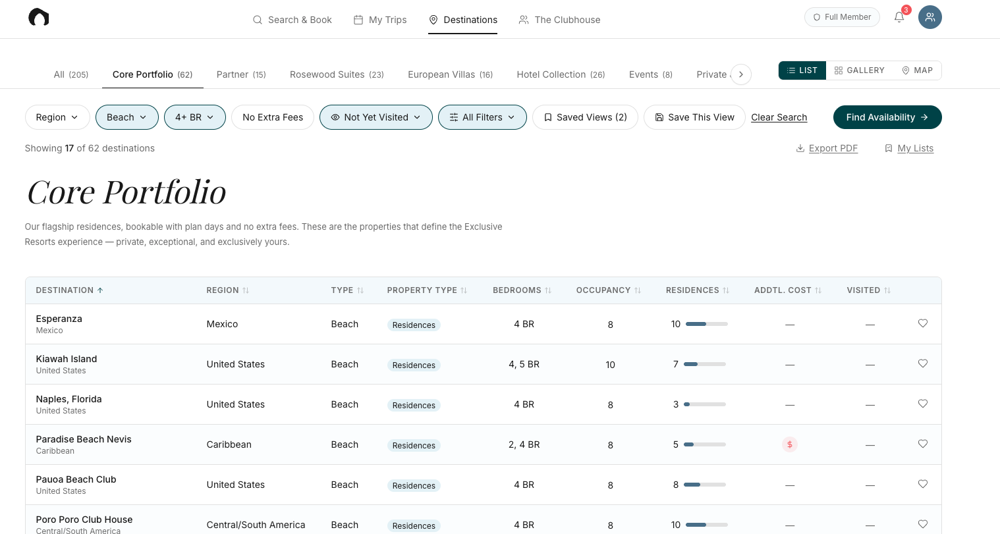

Destination Browse.
Every ambassador call starts the same way: "Where do you want to go?" And Members say "I don't know." The portfolio has grown to 150+ destinations and 400+ residences, but the tools for browsing it haven't evolved past a text directory. Members can search for a specific date — that part works — but there's no way to narrow before they're ready to book. The result: decision paralysis, plan days left unused, and ambassador conversations that start from scratch every time.
The work started with a single in-depth Member interview — a long-tenured Member who'd built his own spreadsheet cataloging the entire portfolio because the Portal couldn't help him decide where to go. His frustrations weren't unique. I connected them to patterns I'd been hearing in ambassador conversations for years and to my own time on the Member Services side, where every call followed the same "I don't know" → "let me list some options" → "maybe" loop. The real gap was a missing stage in the Member journey: dreaming and narrowing, the work that happens before checking availability. We had a strong tool for booking. We had nothing for the stage that leads to it.
I built a prototype: a sortable view of the full portfolio, filter pills matching the existing Search & Book pattern, collection tabs, saved views, and a direct bridge from filtered results into Search & Book for availability. Shared it with leadership, ambassadors, and a small group of Members for feedback. Members recognized it as the tool they'd been working around. Ambassadors recognized it as something they'd use during calls. Leadership signed off on the direction. The prototype isn't shipped yet — it's earning the alignment needed to move from concept to roadmap, and the foundation is in place: filters reuse patterns Members already know, the data exists, the UI primitives exist. The build is a question of when, not whether.
![The Destination Browse prototype on the All view — a Destinations tab showing 205 of 205 destinations, with a tab strip across portfolio segments (All, Core Portfolio, Partner, Rosewood Suites, European Villas, Hotel Collection, Events, Private), filter pills for region/type/bedrooms/no extra fees/visited status/all filters, Saved Views, List/Gallery/Map toggles, and a data table of destinations with region, type, property type, bedrooms, occupancy, residences, additional cost, and visited columns.](assets/work/browse/all-destinations.png)
